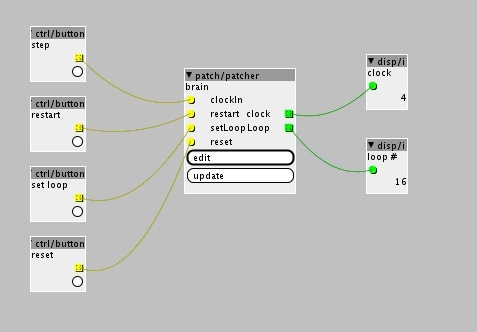
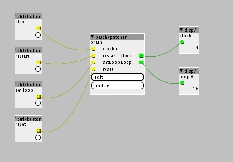

i just spent the evening putting together a patcher object with a counter that can be set dynamically. Is there any chance of getting an object that does this?
here's my patch for laughs:

{kind=link}
counter_definable.axp (9.1 KB)

i just spent the evening putting together a patcher object with a counter that can be set dynamically. Is there any chance of getting an object that does this?
here's my patch for laughs:

counter_definable.axp (9.1 KB)
That's quite a spaghetti... Not sure what the setLoop inlet is supposed to do. Certainly better addressed with a custom object if it can be generic enough.
Patcher-based environments are not good for expressing every algorithm, I recall Miller Puckette (PD inventor) giving the hypothetical example of patching the "quicksort" algorithm...
The setLoop is specific for what i want to achieve now. It takes the current counter value and sets it as maximum.
As for the request it would be:
cyclic up/down counter
with an extra inlet that can set the counter maximum when the patch is live.
I think i just managed to make the object!!
Using "latch" and "counter" as reference and with my limited Arduino programming experience i managed to hack together a new object and fix the SHA etc from the Axoloti window feedback. 
Sounds interesting  Can you give an example of a use case? I dont think I understand what it does fully.
Can you give an example of a use case? I dont think I understand what it does fully.
Thanks and merry christmas.. hohoho.... 
in the case of a stepsequencer looking up values from a table based on the counter index you could change the sequence length on the fly using a single counter. Or easily input sequences without the lengths being fixed to 8,16, 32 etc.
i'm interested in building something lijke the sequencer in an SH-101.Here is some basic programming. It seems pretty boring but note that the sequence can easily end up with odd lengths.
Then add the fact that you can trigger steps from the instrument output on a 606. So instead of simulating a clock with even steps you can get rhythmic or have 7, 9, 13 steps per bar for example. In this link you can see that the 101 sequencer is triggered by LT outputs from a 606. Around 2:30 you see the guy changing the LT sequence and the 101 reacting:
The dynamic counter object had a math mistake which i corrected. Its cleaned up and working as expected now.
I have the first version of my sequencer working with Ableton Live functioning as note clock and playback instrument.
dynamic counter.axo (1.4 KB)